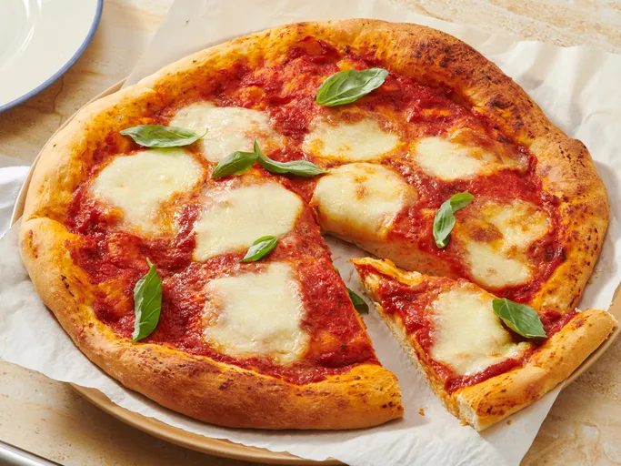

Pizza

Description
It's quick and easy to make for a delicious homemade pizza crust that you can top with pizza sauce and your favorite toppings!
Serve and enjoy!
- 1 (.25 ounce) package active dry yeast
- 2 teaspoons granulated sugar
- 3/4 cup warm water (110 degrees F/45 degrees C)
- 2 cups bread flour, plus more as needed
- 1 teaspoon kosher salt
- 3 tablespoons extra-virgin olive oil, divided
back to Home